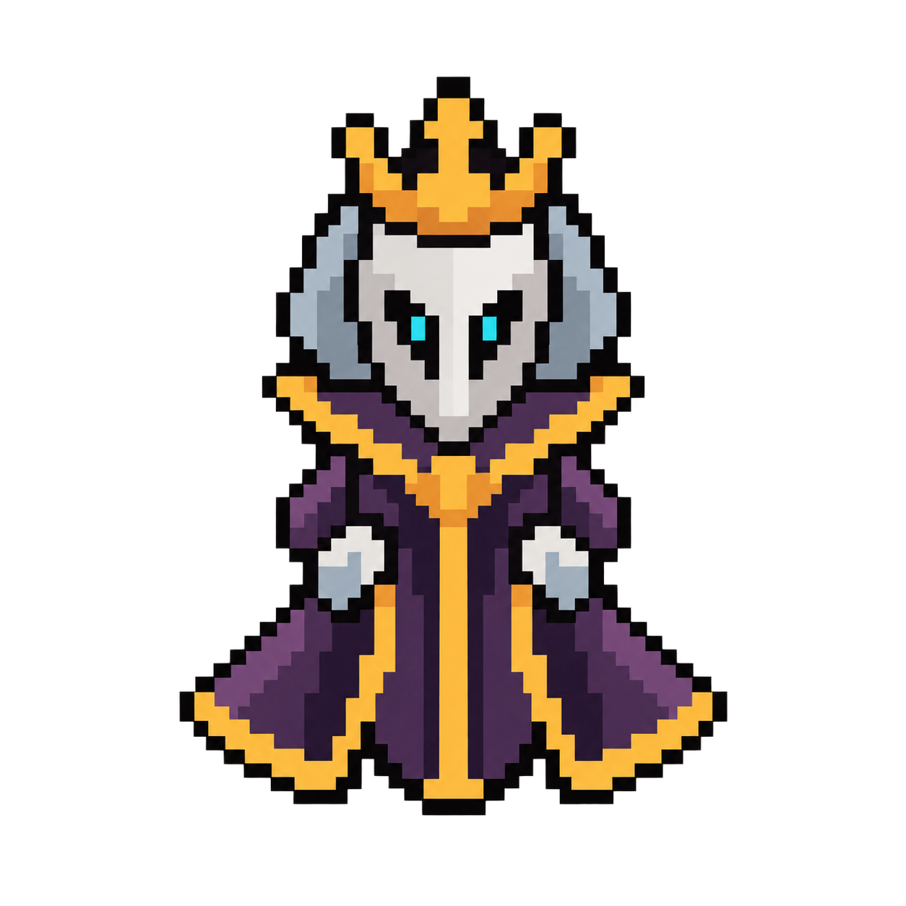
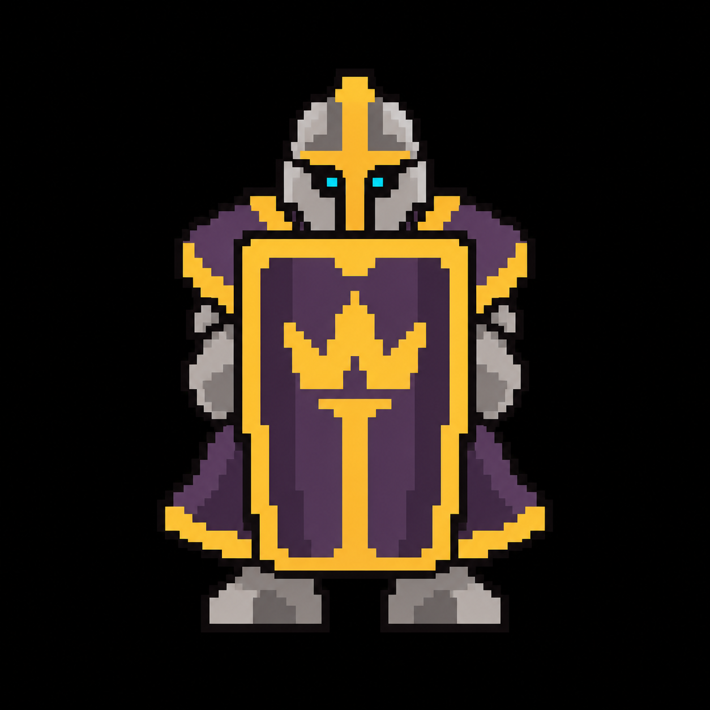
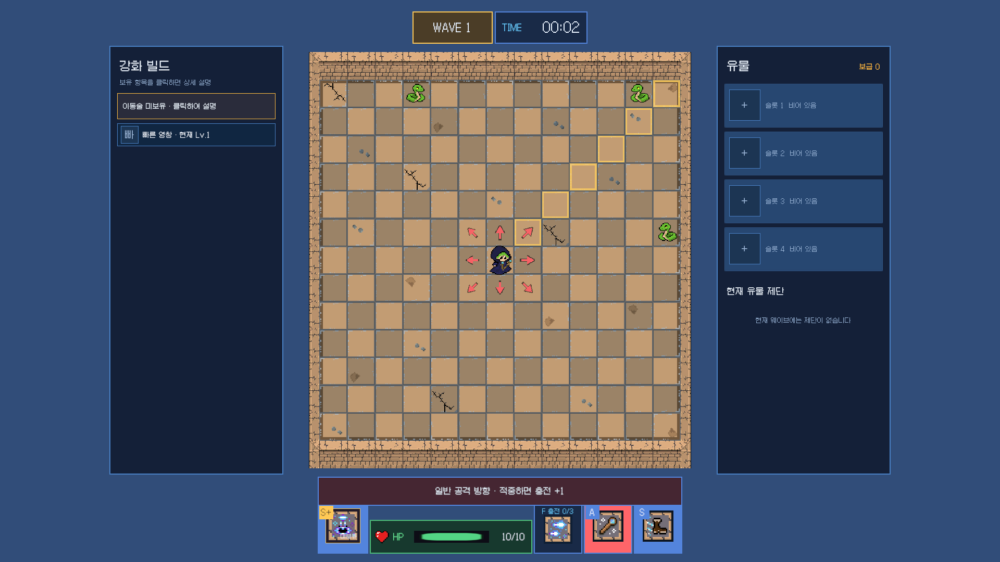
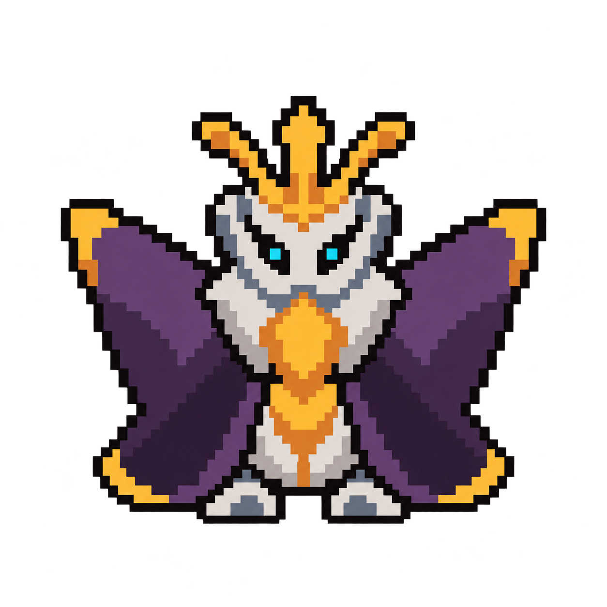
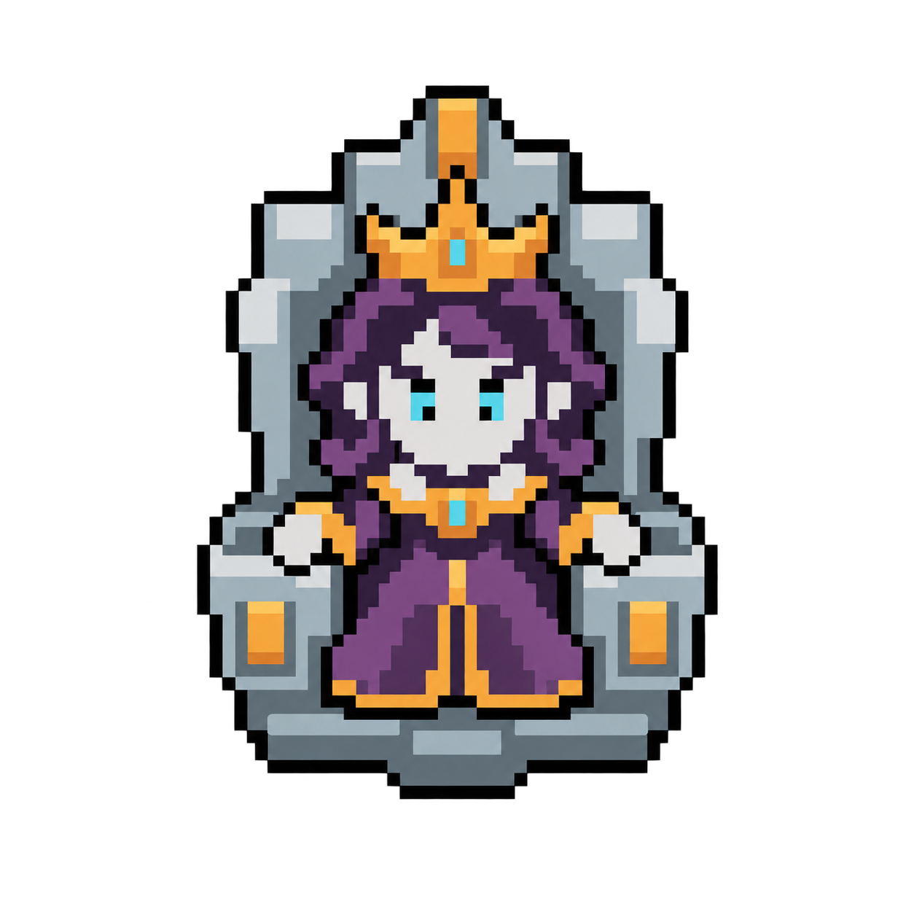

A · 가면 여왕
삼각형 망토 · 가면 지휘관

퀸 · 화면 표시 폭 120px

근위대 · 68px 표시

현재 저장 화면 위 동일 좌표·동일 캔버스 크기의 가상 배치
같은 진영 색과 큰 픽셀 덩어리 기준으로 만든 세 가지 형태. 생성 확대본을 비교하는 디자인 검토판입니다.
삼각형 망토 · 가면 지휘관

퀸 · 화면 표시 폭 120px

근위대 · 68px 표시

넓은 날개 · 동물형 여왕

퀸 · 화면 표시 폭 120px
근위대 · 68px 표시
각진 왕좌 · 왕실 지휘관

퀸 · 화면 표시 폭 120px
근위대 · 68px 표시
생성 초안 · 최종 도트 에셋 미검증. 원본은 120×120px가 아니며 색상 제한과 픽셀 가장자리도 최종 규격을 충족하지 못합니다.
아래 보드 배치는 크기와 가독성 비교용이며, Unity에서 보스나 점유·충돌 규칙을 구현한 화면이 아닙니다.